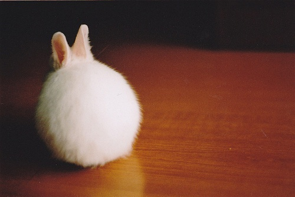

肚子里实在没墨水....
肚子里实在没墨水....七夕原创情诗赛
今天是七夕佳节，网站举办七夕赛情诗会，诗词要求必须有 棋 字，截止今晚十点
奖励： 第一800金币 第二500 金币 第三300 金币 参与50 金币 或者奖励同等金币的鲜花
奖励的金币由丸子.net赞助
有胆大的帅哥，可以通过情诗来博坛里的美眉欢心，或许有意外
评委：爱五子棋管理部管理员
解释权归爱五子棋网站管理部
［此帖子已被 蓝天蓝 在 2011-8-6 11:29:22 编辑过］
［ 雅匪 于 2011-8-6 14:24:14 时花20金币送鲜花一朵］
［此帖子已被 被感动的人 在 2011-8-6 19:05:56 编辑过］
有金币啊。那哥参加一下
寂寂人定出，奄奄黄昏后，已是七夕独自愁，更著棋和玉。
无意苦争春，无主相似处，零落成泥碾作尘，唯有单身故。
［ 蓝天蓝 于 2011-8-6 10:48:27 时花20金币送鲜花一朵］
［ 微微一笑 于 2011-8-6 11:02:05 时花20金币送鲜花一朵］
丸子注：此文根据词《孔雀东南飞》改编。不错。
［此帖子已被 小丸.net 在 2011-8-6 16:08:45 编辑过］
［ 蓝天蓝 于 2011-8-6 10:47:59 时花20金币送鲜花一朵］
［ 微微一笑 于 2011-8-6 11:02:10 时花20金币送鲜花一朵］
丸子注：表达了一个单身男子的无奈、羡慕与嫉妒。
［此帖子已被 小丸.net 在 2011-8-6 16:09:28 编辑过］
迎七夕爱网重赏，乐世锦棋诗共品。版主表示好诗会先送花，等我电脑啊大伙
丸子注：
迎七夕爱网重赏，乐世锦棋诗共品。
好诗会版主赠花，上网手机无奈何！
［此帖子已被 小丸.net 在 2011-8-6 16:11:16 编辑过］
今朝七夕佳节到
牛郎织女鹊桥会
诉罢离别相思苦
静坐一起思棋局
好事
“有胆大的美女，可以通过情诗来博坛里的帅哥欢心”――亮点
看来没多少人参与，我再写一首是不是能把前3名都拿到？
肚子里实在没墨水....
看在兔子实在很萌的份上..我来凑个数好了.....
遥望别经年 残局如星织 相思瘦七夕 黑白未尽时 |
［此帖子已被 掌棋如烟 在 2011-8-6 16:23:42 编辑过］
［ 蓝天蓝 于 2011-8-8 0:53:52 时花20金币送鲜花一朵］
引用：
原文由 蓝天蓝 发表于 2011-8-6 11:31:34 :今朝七夕佳节到
牛郎织女鹊桥会
诉罢离别相思苦
静坐一起思棋局
稍微改动一下可能会好一点：
今朝七夕佳节到
织女牛郎会鹊桥
诉罢离别相思苦
共观世锦到日晓。
引用：
原文由 掌棋如烟 发表于 2011-8-6 15:51:13 :

［此帖子已被 掌棋如烟 在 2011-8-6 16:13:27 编辑过］
兔儿兔儿真奇怪，
背转身来就使坏，
全身洁白无瑕疵，
如烟千斤来表怀。
引用：
原文由 小丸.net 发表于 2011-8-6 16:05:33 :引用：
原文由 蓝天蓝 发表于 2011-8-6 11:31:34 :今朝七夕佳节到
牛郎织女鹊桥会
诉罢离别相思苦
静坐一起思棋局稍微改动一下可能会好一点：
今朝七夕佳节到
织女牛郎会鹊桥
诉罢离别相思苦
共观世锦到日晓。
今朝七夕佳节到
织女牛郎会鹊桥
诉罢离别相思苦
共赏世锦到日晓。
丸子注：我的肩是你永远的依靠，希望天天像今天这样。
［此帖子已被 小丸.net 在 2011-8-6 16:35:03 编辑过］
［此帖子已被 蓝天蓝 在 2011-8-6 16:59:08 编辑过］
引用：哪里是《孔雀东南飞》，明明是陆游的《卜算子・咏梅》
原文由 润土 发表于 2011-8-6 9:32:03 :寂寂人定出，奄奄黄昏后，已是七夕独自愁，更著棋和玉。
无意苦争春，无主相似处，零落成泥碾作尘，唯有单身故。
［ 蓝天蓝 于 2011-8-6 10:48:27 时花20金币送鲜花一朵］
［ 微微一笑 于 2011-8-6 11:02:05 时花20金币送鲜花一朵］
丸子注：此文根据词《孔雀东南飞》改编。不错。
［此帖子已被 小丸.net 在 2011-8-6 16:08:45 编辑过］
引用：一首诗改了N个版本，是占便宜呢还是会吃亏呢？明天来看结果.
原文由 蓝天蓝 发表于 2011-8-6 16:52:23 :今宵七夕佳节到
织女牛郎鹊桥笑
诉罢离别相思苦
情侣棋伴语声悄
引用：结果今天就出来的
原文由 微微一笑 发表于 2011-8-6 16:58:58 :引用：一首诗改了N个版本，是占便宜呢还是会吃亏呢？明天来看结果.
原文由 蓝天蓝 发表于 2011-8-6 16:52:23 :今宵七夕佳节到
织女牛郎鹊桥笑
诉罢离别相思苦
情侣棋伴语声悄
［此帖子已被 蓝天蓝 在 2011-8-6 17:55:06 编辑过］
有钱啊 打劫~ 大白话四句
五星连珠造宇宙
棋语棋言共七夕
黑白经纬铸情谊
海角天涯存知己
［ 梧桐风 于 2011-8-6 21:38:17 时花20金币送鲜花一朵］

［此帖子已被 蓝天蓝 在 2011-8-6 22:00:45 编辑过］
［ 逆刃 于 2011-8-7 0:47:00 时花20金币送鲜花一朵］
［此帖子已被 雅匪 在 2011-8-6 22:05:42 编辑过］
［ 蓝天蓝 于 2011-8-7 8:46:05 时花20金币送鲜花一朵］
有效作品有：
润土：
寂寂人定出，奄奄黄昏后，已是七夕独自愁，更著棋和玉。
无意苦争春，无主相似处，零落成泥碾作尘，唯有单身故
梦里单身画江南，
七夕青烟长诗卷，
织女牛郎情缱绻
吾渡孤苦舞棋盘
蓝天蓝：
今朝七夕佳节到
织女牛郎会鹊桥
诉罢离别相思苦
共赏世锦到日晓。
今宵七夕佳节到
织女牛郎鹊桥笑
诉罢离别相思苦
情侣棋伴语声悄
by:web版  IP：
已记录
IP：
已记录
有这么个活动啊，随便写写啦，好久没有煽情了，顺便加了点五子棋术语，韵律上有些偏差。
河汉楚楚遥，孤影照七夕。
疏星如离泪，残月似曲眉。
棋在子谁落，弦断无人知。
曾经双飞燕，两打各东西。
［ 蓝天蓝 于 2011-8-7 6:57:23 时花20金币送鲜花一朵］

［此帖子已被 小丸.net 在 2011-8-8 0:49:45 编辑过］
［ 小丸.net 于 2011-8-8 0:50:11 时花20金币送鲜花一朵］
［ 小丸.net 于 2011-8-8 0:50:59 时花20金币送鲜花一朵］
［ 小丸.net 于 2011-8-8 0:51:26 时花20金币送鲜花一朵］
［ 小丸.net 于 2011-8-8 0:51:43 时花20金币送鲜花一朵］
引用：你设计的图片很好，就向奖金赞助者丸子.net 提出了奖励一下，丸子.net 很爽快的就答应了
原文由 掌棋如烟 发表于 2011-8-8 14:00:30 :
在这里谢谢丸子.net 的赞助